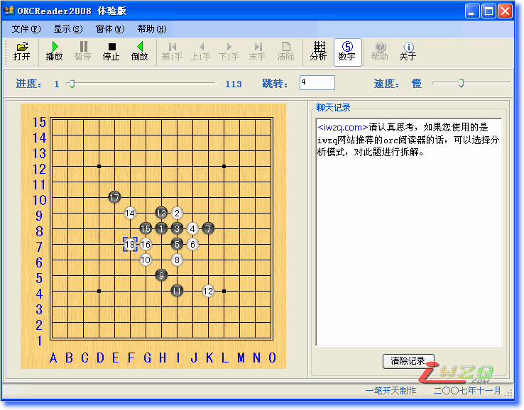

一笔开天的orc阅读器2008体验版，提供下载了
#1 一笔开天的orc阅读器2008体验版，提供下载了 作者：有志青年 发表时间：2007-11-3 21:45:42
刚刚收到一笔开天先生发来的体验版，使用之后的第一感受是漂亮，可人。
这次的软件是用C#编写的，必须先安装.NET2.0的框架，也就是dotnetfx_38669.exe。然后就可以运行程序了。
提供几个dotnetfx_38669.exe的网址吧，上传太慢了。
http://www.pudn.com/downloads91/sourcecode/others/detail350299.html
http://www.live-share.com/files/260818/dotnetfx_38669.exe.html
软件界面如下：

就发布和.net的环境等问题和作者进行的交换意见，回复如下：
1.此软件可以任意拷贝，只要不用于商业用途就行。
2.禁手问题将在正式版中解决，而且在正式版中还会增加很多其他功能。
3.现在基于.NET开发的软件，都必须安装框架结构，这点是没办法的，但是一旦安装后，使用其他.NET软件时都不需再次安装。这就象用JAVA时也必须安装一个JAVA运行库一样。对这一点，我只能说抱歉了。建议在下载软件的同时，提供框架的下载。
4.字体大小的设置我会考虑更改的，本以为没什么大碍，就偷懒了。
5.“软件启动之后的初始状态，棋盘好象不能正确显示。需要最大化一下。”，不能理解，我试过多台电脑，WindowsXP和Windows2003都没出过这种问题，请详细些说明。
既然是体验版，让网友帮我体验下吧。有问题也好改，计划正式版出过后，再不改了。毕竟我个人认为这种教学方式已经有些落伍了，呵呵。
 ORCReader2008.rar
ORCReader2008.rar望各位在使用中多提意见，以便修改完善！
最新修改版2007-11-26
#2 Re:一笔开天的orc阅读器2008体验版，提供下载了 作者：醉轩听雨 发表时间：2007-11-5 7:01:25
支持一下楼主
#3 Re:一笔开天的orc阅读器2008体验版，提供下载了 作者：痞子电磁波 发表时间：2007-11-9 9:52:02
支持#4 Re:一笔开天的orc阅读器2008体验版，提供下载了 作者：行云流水 发表时间：2007-11-9 12:36:11
复杂哦#5 Re:一笔开天的orc阅读器2008体验版，提供下载了 作者：news 发表时间：2007-11-28 10:48:24
除了好看和复杂点,
有什么新功能没?这是关键啊.谢谢